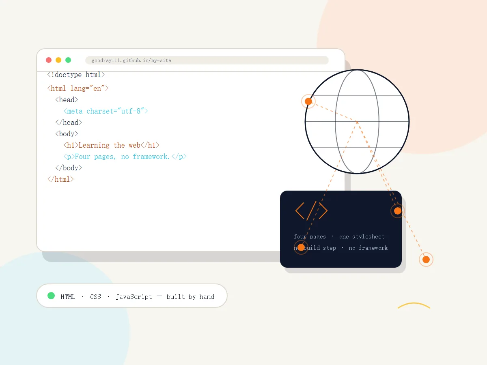

01 · Quotes
Eighteen quotes
Sentences about learning, craft and the web that are worth keeping. Search them, filter them, or ask for a random one.
Web Technologies · course site
Four pages, written from scratch while learning HTML, CSS and JavaScript. No framework, no build step — just the three languages of the web, and the things I made with them.

Three pages of good stuff and one page of nonsense. Every page is linked from the navigation above, and every link works.
01 · Quotes
Sentences about learning, craft and the web that are worth keeping. Search them, filter them, or ask for a random one.
02 · Ideas
Things I could build next, sorted by how ready I am to build them. Each one lists the skills it would need.
03 · Machine
A box with one switch. It turns itself off. And a small game where you catch bugs before they escape the screen.
04 · About this build
Semantic HTML, one stylesheet, and JavaScript with no dependencies. The navigation is written once and loaded into every page.
The log is small and honest. These are the last three changes.
Every link clicked, every image checked, the layout tested from 320 px to a wide desktop.
Eighteen quotes with search and filters, eight project ideas, and the useless machine game.
One navigation for every page, colour and type tokens, and the first version of the home page.
Each page is an excuse to practise one part of the course.
Semantic landmarks, one h1 per page, a heading order that never skips a level, and forms of lists that match their content.
Grid for page-level composition, Flexbox for components, clamp() for type that scales, and three breakpoints that matter.
DOM building, event delegation, IntersectionObserver, a random quote, and enough state for a game with a score.
Focus styles that are visible, a skip link, reduced-motion support, alt text on every image, and colour contrast above 4.5:1.